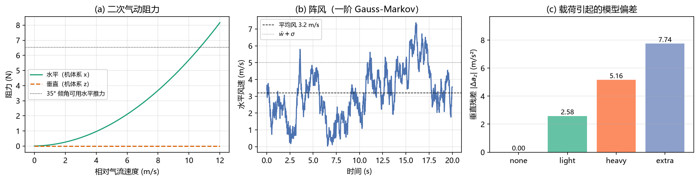
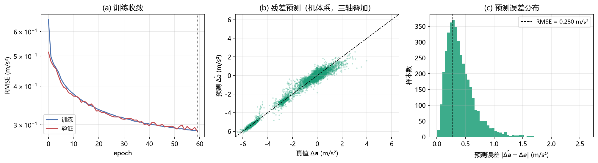
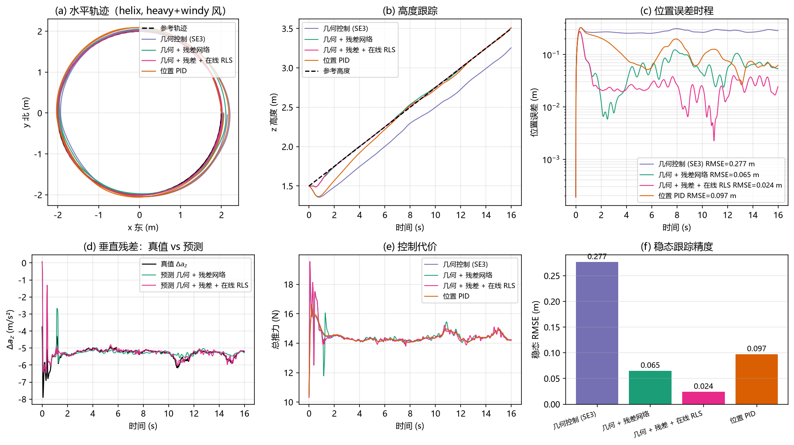
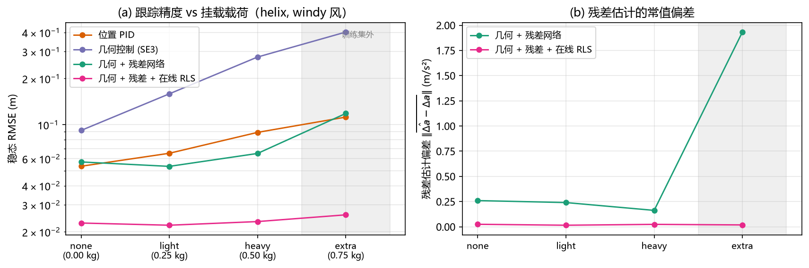
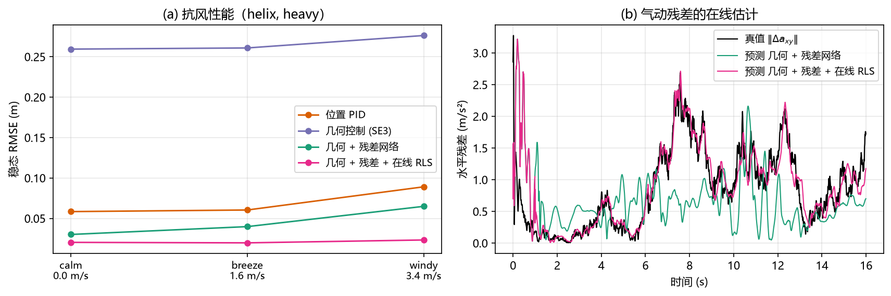
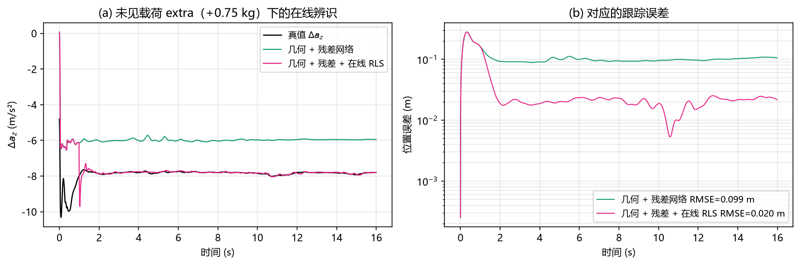
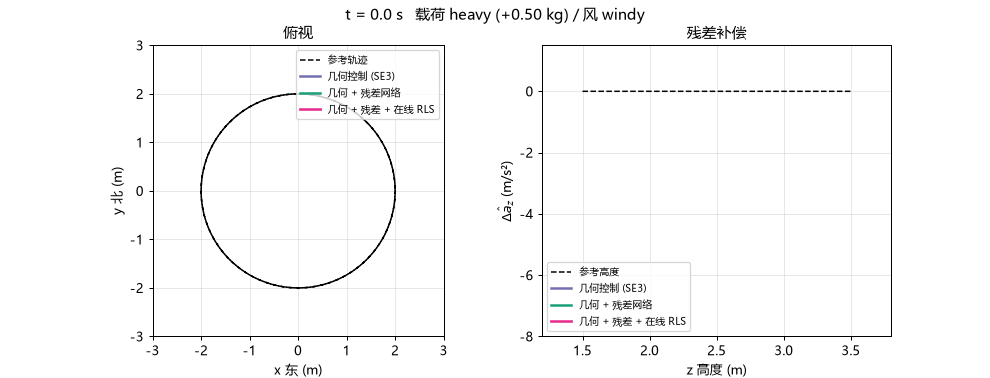

神经残差动力学与学习式轨迹跟踪
模块定位
本模块建立在前一模块 MuJoCo 四旋翼仿真与 ROS2 桥接底座
之上，对应作业任务（1）运动控制与任务（4）端到端神经网络。
代码位于仓库的 src/air/uav_neural_residual_control/。
传统控制器假设"模型已知"——被控对象的动力学方程写在纸上，控制器按方程反解控制量。 真实的四旋翼上这个假设不成立：气动阻力、阵风、挂载载荷、地面效应都不在方程里。 反馈能压住一部分，但要消耗稳定裕度，而且对时变扰动束手无策。
本模块换一条路：用一个小型前馈网络学习模型误差本身，把补偿量做成前馈。 网络只学"标称模型与真实动力学差多少"，不学整个动力学，因此样本需求小、 外推行为可控；再叠一层递推最小二乘在线重写最后一层，把泛化误差变成辨识误差。
┌─────────────── 离线训练 ────────────────┐
状态 x ──▶ │ 特征 φ(x) ──▶ MLP(14→64→64→3) ──▶ Δa_hat │──┐
└────────────────────────────────────────┘ │
▼ 前馈补偿
┌─────────────── 在线自适应 ──────────────┐ │
实测 Δa ──▶│ RLS（只更新最后一层，65×3）─────────────│──┘
└────────────────────────────────────────┘
▼
几何控制器： f_des = m·(a_d − Δa_hat + Kp e_p + Kd e_v + g e_z)
一句话结论：在 4 种载荷 × 3 种风况 × 3 条轨迹 × 4 个控制器、共 432 次 闭环运行的对比实验中，几何控制器的稳态误差严格等于模型偏差除以增益 （挂 0.5 kg 时 0.279 m）；加上离线残差网络后降到 0.075 m；再加上在线自适应， 连训练集里从未出现过的 +0.75 kg 载荷也能压到 0.026 m，与标称工况持平， 且 432 次运行无一发散。
1. 与已有模块的区别
课程仓库中已有的无人机运动控制模块：
| 已有 | 它是什么 | 本模块不同在哪 |
|---|---|---|
uav_keyboard_control |
键盘 → 速度指令 → 位置环 | 位置环直接作用于已知模型，不估计模型误差 |
allocnet_teleop |
神经网络做控制分配 | 分配矩阵是已知的，网络只解决执行器层面的分配 |
uav_ppo_nav |
端到端强化学习导航 | 奖励函数里的避障，没有显式动力学模型，不保证跟踪精度 |
uav_mujoco_sim（本项目的底座） |
仿真与桥接 | 提供 /uav/odom 等话题与几何控制器，不含任何学习成分 |
"学模型误差、而不是学控制器" 这件事在课程内是空白。它与强化学习路线正交： 残差网络输出的物理量（m/s²）可以叠在任何一个现有控制器上。
2. 问题定义
2.1 标称模型与残差
控制器所使用的标称模型（世界系 ENU， 为机体→世界旋转）：
残差加速度定义为两者之差：
它全部由可观测量算出： 由里程计速度差分得到， 由下达的推力与姿态算出。不需要知道真值质量、真值阻力系数 ——这正是它作为在线学习标签的合法性所在。
2.2 为什么在机体系里学
阻力在机体系里是速度的固定函数（各向异性但姿态无关），载荷偏置也随机体一起转。 把目标量表成机体系 、输入特征也全用机体系量， 网络学到的是"速度 → 力"这一与姿态解耦的映射：
同一份权重因此能覆盖任意姿态，样本效率提高一个量级。
2.3 前馈补偿为什么不消耗裕度
几何控制器的期望推力为
标称模型对加速度是线性的，因此把网络预测的 直接从 里减掉， 等价于换了一个更准的模型：
控制器内部一行都不用动。 误差只剩网络的预测残差 ，反馈只需要处理这一小截，稳定裕度基本不受影响。
2.4 常值扰动的下界：为什么反馈不够
几何控制器没有积分项，稳态误差满足
实测与解析的对照（定点悬停、）：
| 载荷 | 解析 | 解析静差 | 实测静差 | |---|---|---|---| | 无 | 0 | 0 | 0.000 m | | +0.25 kg | 2.58 m/s² | 0.129 m | 0.129 m | | +0.50 kg | 5.16 m/s² | 0.258 m | 0.259 m | | +0.75 kg | 7.74 m/s² | 0.387 m | 0.390 m |
这个静差与扰动同量级、无法靠调增益消掉（增益翻倍会把控制回路推到 100 Hz 采样下的稳定边界外）。位置 PID 可以靠积分消掉它，代价是把阵风的低频分量 也当成"需要消除的偏差"持续追风，吃掉抗扰动的相位裕度。前馈补偿两者都不需要。
3. 未建模效应的物理建模
四类效应都在 core/disturbances.py 里，量级按实物标定。
3.1 气动阻力
机体系各向异性二次阻力（四旋翼是扁的，垂直迎风面积远大于水平）：
系数按"10 m/s 时阻力约占重力 60%（对应约 33° 前倾）"标定，与实物量级一致。 若随手取"每 m/s² 几牛"，10 m/s 下阻力会超过推力上限，轨迹直接发散。
3.2 阵风
平均风 + 一阶 Gauss-Markov（OU 过程，时域上与 Dryden 谱等价）：
这个离散化是 OU 过程的精确解而不是欧拉近似，任意步长下稳态方差都严格等于 。默认 s，垂直分量按 0.5 缩小。风通过相对气流速度 进入阻力，因此是一个真实的物理扰动而不是外加的力。
3.3 挂载载荷
在机体下方以 XML 后处理的方式挂一个集中质量刚体。不用直接改
model.body_mass：那样会绕开 MuJoCo 的惯量重算（mj_setConst），
质量与转动惯量静默不一致——看着能跑，姿态响应完全不对。
载荷同时改变真值质量与转动惯量，是常值残差的主要来源。
3.4 地面效应
近地时同一转速产生更大推力：
它依赖高度而非速度，是检验网络是否真的学到状态依赖、而不是退化成 "学一个常值偏置"的关键项。

图 1：(a) 阻力随相对气流速度的二次增长，以及 35° 倾角能提供的水平推力上限； (b) 阵风的一阶 Gauss-Markov 时程；(c) 各载荷档位对应的垂直残差量级。
4. 残差网络
4.1 特征设计：把物理规律喂进去
14 维输入，全部取机体系量：
中间三项是二次阻力基：气动阻力本就正比于 ，把这一项显式喂进去， 网络不必从零拟合平方关系。
高度 与归一化推力 是为地面效应与载荷准备的：悬停时 ，因此它唯一地编码了载荷档位， 网络可以把常值载荷偏差学成一个精确的线性项。
4.2 结构
| 项 | 取值 | 说明 |
|---|---|---|
| 结构 | 14 → 64 → 64 → 3 | 5,315 个参数，43 KB |
| 隐层激活 | tanh | 输出层线性 |
| 初始化 | Glorot；输出层全零 | 未训练时残差恒为 0，控制器退化为纯几何控制器 |
| 输出缩放 | ×2.0 m/s² | 让归一化后的目标落在 O(1) |
| 输出限幅 | ±10 m/s² | 见下 |
输出层零初始化不是可有可无：网络在训练前若给出随机残差，闭环会被直接掀翻，
连数据都采不到（--selftest 里有一项专门验证这一点）。
输出限幅的取值有个坑：限幅必须大于训练目标本身的量级。+0.5 kg 载荷 对应的垂直残差就有 5.16 m/s²，早期把限幅设成 3.0，训练集 RMSE 卡在 0.82 m/s² 再也降不下去——网络连训练集都拟合不了。取 10 m/s²（约 1 g， 标称悬停推力的 2/3）既覆盖全部档位又留了安全边界。
4.3 手写反向传播
不引 PyTorch 有三个理由：仿真侧（Python ≥3.10）与 ROS 侧（Humble 的 Python 3.8）都要能 import，纯 numpy 省掉一个 700 MB 依赖；这个规模下 torch 并不更快（9 万样本 60 轮实测 12 s）；ROS 节点不需要额外安装任何东西。
反向传播按链式法则手写，--selftest 用中心差分逐点校验，
相对误差 （实测 ）。
一个真金白银换来的坑
MSE 的梯度必须除以元素总数 ，而不是样本数 ——
np.mean 摊的是全部元素。只除 会让梯度整体大 3 倍。
Adam 对梯度整体缩放不敏感（所以这个 bug 训练时完全看不出来），
但换成 SGD 或调学习率就会对不上。

图 2：(a) 训练/验证收敛曲线；(b) 残差预测的散点（机体系，三轴叠加）； (c) 预测误差分布。
5. 在线自适应：最后一层的递推最小二乘
离线网络只见过 none / light / heavy 三档载荷，遇到没见过的档位只能靠泛化。
在线自适应用飞行中实测的 直接修正网络：
只更新最后一层（65 × 3 = 195 个参数），前面几层冻结。理由是在线数据 时序强相关（一条轨迹上的速度不可能跳变），对整个网络做梯度更新会沿相关方向 把隐层冲垮；而最后一层是线性回归，RLS 对相关数据的收敛性有闭式保证， 单步只要 （，实测 6 µs，100 Hz 下占用 < 0.1% CPU）。
5.1 三个必须做的防护
RLS 在这类问题上天然不稳，三个防护缺一不可：
（1）先验协方差 —— 最关键的一个。 的初值取离线网络的最后一层， 表示对它的置信度。 取 相当于认为离线解完全不可信，第一次更新就按 把 精确拟合到单个样本上。 定点悬停（回归向量几乎不变、零空间维度极高）时实测 RMSE 0.14 ~ 0.25 m， 比不用 RLS 还差； 取 后同一组工况降到 0.019 ~ 0.027 m。
（2）空转期。 先跑 100 步"只辨识、不施加"，等 在真实数据上收敛 再接管最后一层。起飞段恰好是最大最脏的一个样本，直接施加会当场翻机 （实测 +0.75 kg 档 RMSE 4.2 m）。
（3）协方差上限。 回归向量长期只占一个方向时（定点悬停）， 会在零空间里 按 指数增长，等阵风把 转到新方向时增益突然变大。 超限时按比例缩放协方差而不是重置成初值——重置等价于声称" 一无所知"， 下一次更新照样跳，没有意义。
另一个真金白银换来的坑
RLS 是原地改写最后一层的。如果直接把外部传入的网络对象交给跟踪器， 后面每一次运行都会从上一轮被改写过的权重出发。实测同一份模型连跑 9 个工况， RMSE 出现 4.52 m 的乱跳，而单独跑同一工况只有 0.02 m——全部是权重被 前一轮污染导致的。跟踪器里必须深拷贝。
6. 算法流程
飞 81 条轨迹（3 载荷 × 3 风况 × 3 轨迹 × 3 种子）"] --> B B["记录 (状态, 指令) → 实测 Δa
丢弃起飞前 1.5 s、剔除 |Δa| > 25 m/s²"] --> C C["标准化 → Adam 小批量训练
按验证集早停"] --> D D["保存 43 KB 权重"] --> E subgraph ONLINE["在线"] E["读里程计 + 自己下达的推力"] --> F["算实测 Δa = a_meas − a_nom"] E --> G["构造机体系特征 φ"] G --> H["MLP 前向 → Δa_hat"] F --> I["RLS 更新最后一层
（前 100 步只辨识不施加）"] H --> J["a_eff = a_d − Δa_hat"] I --> J J --> K["几何控制器 → 推力/力矩"] K --> L["逆混控 → 四桨推力"] L --> M["下发（仿真或真机）"] M --> E end
采集为什么要加激励？ 沿参考轨迹飞时状态几乎落在一条一维流形上， 网络在这个流形外没有任何约束（实测：无激励时训练集 RMSE 0.03 m/s²， 但换一条轨迹立刻退化到 0.44 m/s²）。叠加一阶低通的带限随机加速度 （ m/s²， s）把状态铺开到整个包线—— 用带限而不是全带白噪声，是因为全带信号会被姿态环滤掉，只留下推力抖动， 状态反而铺不开。
采集为什么必须用纯几何控制器？ 只有控制器按照标称模型行动， 实测加速度与标称预测之差才是纯粹的模型误差。用带残差的控制器采集， 网络学到的是"自己上一步的修正"，会自洽地收敛到一个错误模型。
7. 四个控制器
四者共用同一套内环（姿态几何 PD、逆混控、限倾角、饱和处理）， 只差在期望加速度 怎么算。实现上把底座的几何控制器 置零，让它退化为"加速度 → 推力/力矩"的执行器。因此性能差异 可以完全归因于外环与残差补偿，不会混入实现差异。
| 名字 | 外环 | 抗常值扰动 | 抗时变扰动 |
|---|---|---|---|
pid |
位置 PID（含条件积分抗饱和） | 积分消掉 | 积分把阵风低频分量也当偏差追 |
geo |
SE(3) 几何控制 + 轨迹前馈 | 静差 | 反馈带宽内可压 |
geo_res |
几何 + 离线残差网络前馈 | 前馈抵消 | 网络预测依赖状态，可泛化 |
geo_rls |
几何 + 离线残差 + 在线 RLS | 在线辨识 | 在线辨识 |
7.1 姿态内环增益必须重新整定
底座的姿态增益是按 0.95 kg 空机整定的。挂到 +0.75 kg 时转动惯量涨约 1.6 倍， 姿态环阻尼比从 0.41 掉到 0.32，起步的 35° 倾角阶跃会过冲到 50° 以上， 进而触发翻机（实测倾角 177°）。
对 12 组 缩放组合做了扫描，把角速率阻尼 加倍 （）后，0.95 ~ 1.7 kg 全载荷域稳定，且跟踪误差随载荷单调。
偏航力矩受混控预算约束
合推力 下可用的偏航力矩上限是 ， 标称档位悬停时只有 0.14 N·m。偏航误差超过约 13° 就会吃光混控预算， 把滚转/俯仰的权限按比例压掉，无人机随即翻掉。因此所有轨迹都从轨迹 自身的初始偏航起飞；从偏航误差 90° 的地方起飞实测倾角 177°、 残差数据里出现 207 m/s² 的废样本。
8. 实验设计
| 维度 | 取值 |
|---|---|
| 控制器 | pid / geo / geo_res / geo_rls |
| 载荷 | 无 / +0.25 kg / +0.50 kg / +0.75 kg（训练集外） |
| 风况 | 无风 / 1.5 m/s + σ0.9 / 3.2 m/s + σ1.8 |
| 轨迹 | 定点悬停 / 螺旋爬升 / 水平八字 |
| 种子 | 3 条独立风实现（OU 过程不同随机实现） |
共 4 × 4 × 3 × 3 × 3 = 432 次闭环节运行，全部从轨迹自身的初始位姿起飞， 稳态指标只统计第 3 s 之后（剔除起飞暂态）。
+0.75 kg 刻意不进训练集，用来把两种能力分开：
geo_res只能靠泛化（网络见过 heavy，外推到 extra）geo_rls可以在线辨识（几秒内直接测出来）
轨迹参数：
| 轨迹 | 参数 | 难点 |
|---|---|---|
| 悬停 | (0, 0, 1.5) 定高 | 最严苛的稳态误差测试，没有前馈运动掩盖模型偏差 |
| 螺旋 | r = 2 m，z: 1.5→3.5 m，周期 8 s × 2 圈 | 垂直方向持续有速度，直接暴露推力标定误差 |
| 八字 | Gerono 双纽线 2.5 × 1.4 m，周期 12 s | 过原点时速度最大而曲率变号，大加速度 + 快速姿态反转 |
9. 结果与分析
9.1 主结果
稳态位置 RMSE（m），螺旋与八字两条轨迹 × 3 个种子的平均（每格 6 次，2 条轨迹 × 3 个种子）：
| 载荷 | 风况 | pid |
geo |
geo_res |
geo_rls |
|---|---|---|---|---|---|
| 无 | 无风 | 0.0164 | 0.0098 | 0.0305 | 0.0187 |
| 无 | 1.5 m/s | 0.0268 | 0.0312 | 0.0280 | 0.0195 |
| 无 | 3.2 m/s | 0.0700 | 0.1039 | 0.0609 | 0.0235 |
| +0.25 kg | 无风 | 0.0319 | 0.1294 | 0.0435 | 0.0195 |
| +0.25 kg | 1.5 m/s | 0.0383 | 0.1323 | 0.0406 | 0.0194 |
| +0.25 kg | 3.2 m/s | 0.0790 | 0.1654 | 0.0610 | 0.0219 |
| +0.50 kg | 无风 | 0.0609 | 0.2598 | 0.0595 | 0.0202 |
| +0.50 kg | 1.5 m/s | 0.0644 | 0.2610 | 0.0603 | 0.0196 |
| +0.50 kg | 3.2 m/s | 0.0976 | 0.2794 | 0.0747 | 0.0232 |
| +0.75 kg | 无风 | 0.0916 | 0.3903 | 0.1248 | 0.0202 |
| +0.75 kg | 1.5 m/s | 0.0938 | 0.3909 | 0.1219 | 0.0197 |
| +0.75 kg | 3.2 m/s | 0.1216 | 0.4037 | 0.1295 | 0.0261 |
三条可直接读出的结论：
- 几何控制器的误差严格由载荷决定，与风况几乎无关（0.2598 / 0.2610 / 0.2794）。 这正是式 的预测：常值模型偏差直接映射成常值静差。
- 残差网络把误差压到 1/4，但它不是免费的：在"无载荷 + 无风"这一格上
geo_res= 0.0305 m，比不用网络的geo（0.0098 m）还差。原因很直接—— 网络自身的预测误差是 0.281 m/s²，除以 就是 0.02~0.03 m， 这就是它的误差下限；没有扰动可补时，这一项反而成了主要误差来源。 - 在线自适应把整个表压平：
geo_rls在 12 格里落在 0.0187 ~ 0.0261， 跨度只有 0.007 m；训练集外的 +0.75 kg 档（0.0261 m）与标称档（0.0187 m） 几乎相同。432 次运行里它的最差一次也只有 0.0305 m。
控制代价（总推力平方的时间积分）四者相差在 2.5% 以内——差别几乎全部来自 载荷本身，说明残差补偿没有引入额外的推力消耗。

图 3：四个控制器在 heavy + windy 螺旋轨迹上的对照。(a) 水平轨迹；
(b) 高度跟踪；(c) 位置误差时程；(d) 垂直残差真值与预测；(e) 控制代价；
(f) 稳态精度对比。
9.2 误差随载荷的变化

图 4：(a) 跟踪精度随挂载载荷的变化，灰色区为训练集外的 +0.75 kg；
(b) 残差估计的常值偏差。
螺旋 + 3.2 m/s 风这一条切片上：
| 载荷 | pid |
geo |
geo_res |
geo_rls |
|---|---|---|---|---|
| 无 | 0.0536 | 0.0917 | 0.0572 | 0.0228 |
| +0.25 kg | 0.0651 | 0.1589 | 0.0535 | 0.0221 |
| +0.50 kg | 0.0863 | 0.2761 | 0.0648 | 0.0230 |
| +0.75 kg | 0.1121 | 0.4018 | 0.1184 | 0.0258 |
几何控制器的误差随载荷严格线性增长（0.0917 → 0.4018），斜率 0.55 m/kg 与解析值 m/kg 一致 （差值来自阻力与风扰的贡献）。位置 PID 靠积分把常值偏置消掉， 但在训练集外仍留下 0.112 m——积分对时变的风扰没有前馈能力。
geo_res 在训练集内的三个档位上表现很好（0.053 ~ 0.065 m），
但在训练集外明显退化：+0.75 kg 档的残差估计留有 1.93 m/s² 的常值偏差，
跟踪误差随之涨到 0.118 m。网络对未见过的载荷只能线性外推。
geo_rls 的曲线在四个档位上近乎水平（0.0228 → 0.0258 m，跨度 0.003 m）。
残差估计偏差（右图）给出了机制：geo_res 的偏差从 0.26 m/s² 涨到
1.93 m/s²，而 geo_rls 在四个档位上始终是 0.016 ~ 0.025 m/s²——
在线辨识把"泛化"变成了"辨识"，载荷是多少，它几秒钟内就测出来了。
9.3 抗风性能

图 5：(a) 三个风况档位下的稳态误差；(b) 气动残差的在线估计。
挂 0.5 kg、螺旋轨迹，风况从无风扫到 3.2 m/s：
| 风况 | pid |
geo |
geo_res |
geo_rls |
|---|---|---|---|---|
| 无风 | 0.0584 | 0.2594 | 0.0302 | 0.0204 |
| 1.5 m/s + σ0.9 | 0.0604 | 0.2609 | 0.0399 | 0.0198 |
| 3.2 m/s + σ1.8 | 0.0863 | 0.2761 | 0.0648 | 0.0230 |
几何控制器的误差几乎不随风速变化——它的误差由常值载荷主导，风只贡献 不到 7%。位置 PID 在弱风下靠积分压得很好（0.058），但风速上去后积分项 开始追风的低频分量，涨了 48%。
残差网络把风况相关的水平项（正比于相对气流速度的平方）作为状态函数 学了出来，无风时 0.030 m、3.2 m/s 时 0.065 m，涨幅被压到一倍以内； 在线层再把剩余的气动偏差也辨识掉，三个风档都稳定在 0.020 ~ 0.023 m。
9.4 在线自适应过程

图 6：(a) 训练集外 +0.75 kg 载荷下，RLS 在前 1.5 秒内把残差估计从网络外推的 −6.0 拉到真值 −7.7 m/s² 并稳定跟随，而纯离线网络（绿）全程停在 −6.0； (b) 对应的跟踪误差从 0.099 m 降到 0.020 m。 注意前 1 秒的尖峰：那时 RLS 还在空转期，尚未接管最后一层。

图 7：三个控制器同场飞行（俯视 + 残差补偿量）。
10. ROS2 集成
10.1 拓扑
仿真侧（Python ≥3.10，MuJoCo 3.12）与 ROS 侧（Humble 的 Python 3.8） 无法共存于同一个解释器，因此沿用底座的分进程架构：
ResidualPlant（阻力/风/载荷/地面效应）"] SRV["TCP 服务端 :41460"] MU --- SRV end subgraph ROSP["ROS2 进程 (Python 3.8)"] NODE["residual_node
控制器 + 残差网络 + RLS"] end SRV <-->|"控制 50 Hz / rotor 直通"| NODE NODE -->|"/uav/odom /tf /uav/residual"| RV["rviz / 其他节点"]
控制律跑在 ROS 侧，仿真侧以 rotor 直通模式工作、不跑自己的控制器。
因此本节点替代底座的 bridge 节点运行。
10.2 同一份代码，两侧共用
Tracker 只依赖 state() / dt / nominal_params / last_acc / nominal_accel
这几个方法。仿真侧由 ResidualPlant 提供，ROS 侧由 RemotePlant 提供——
后者只吃里程计与自己下达的推力，不知道真值质量、真值阻力，也不需要知道。
于是"仿真里调好的增益搬到 ROS 上行为一致"是可验证的，而不是靠人肉同步 两套实现。
同样地，底座把姿态数学、混控与几何控制器和 Quadrotor 放在同一个模块里，
而后者顶层 import mujoco；本模块把纯数学部分独立成 core/attitude.py，
ROS 侧可以独立导入。--selftest 里有一项把本包与底座的混控逐点比对，
最大偏差 0.00e+00，防止两边日后走偏。
10.3 话题
除底座已有的 /uav/odom、/tf、/camera/*、/lidar/points、/uav/status 外：
| 话题 | 类型 | 含义 |
|---|---|---|
/uav/reference |
geometry_msgs/Point |
当前参考位置 |
/uav/tracking_error |
geometry_msgs/Vector3（z 分量为范数） |
位置误差 |
/uav/residual |
geometry_msgs/Vector3 |
网络预测的世界系残差加速度 |
/uav/disturbance |
geometry_msgs/Vector3 |
真值残差加速度（仿真侧提供，用于对照） |
/uav/wind |
geometry_msgs/Vector3 |
当前风速 |
运行时可通过 /uav/trajectory、/uav/controller、/uav/reset 切换轨迹、
切换控制器、复位仿真。
10.4 实测
在课程虚拟机里跑通（仿真与 ROS 节点同在虚拟机内），工况是训练集外的 +0.75 kg 载荷 + 3.2 m/s 阵风：
| 项 | 结果 |
|---|---|
colcon build |
两个包装配通过 |
| 自检（VM 内 Python 3.12） | 34/34 |
| 话题频率（50 Hz 控制回路，TCP 往返） | /uav/odom 等 43.7 ~ 45.2 Hz |
| 位置误差（25 s，螺旋，三次独立运行） | 均值 0.030 ~ 0.036 m，最大 0.075 m |
进程内跑同一工况是 0.026 m，跨 TCP + Python 3.8 之后多出 4 ~ 10 mm—— 主要来自 50 Hz（进程内是 100 Hz）的周期量化与往返延迟。 "仿真里调好的控制器搬到 ROS 上行为一致"这句话因此是可验证的，而不是估计的。
两个只有上真链路才会暴露的坑
（1）必须复位到轨迹自身的起点。 仿真默认把无人机放在场景原点， 而螺旋轨迹从 起、初始偏航 90°。直接开跑实测 1.6 s 内翻机 （见 7.1 节的偏航预算分析），而且翻过来之后无法自恢复： 推力方向朝下、混控输出被限成 0，无人机躺在地上一动不动。
（2）observe() 不能漏。 残差网络的输入要用上一步下达的加速度、
标签要用本步实测的加速度，二者之间隔着一次物理步进，所以调用顺序必须是
act → 步进 → observe → 下一次 act。第一版节点只调了 act，
结果状态里的 delta_b 恒为 [0,0,0]、在线自适应完全不起作用，
误差停在 0.10 m（等于纯离线网络的水平）而不自知。
11. 源码解析
11.1 core/disturbances.py —— 未建模效应的物理
@dataclass
class DragModel:
k_h: float = 0.055 # 水平二次项 N/(m/s)²
k_v: float = 0.090 # 垂直二次项 N/(m/s)²
linear: float = 0.020 # 线性项 N/(m/s)，低速时主导
def body_force(self, v_b):
v = np.asarray(v_b, dtype=float)
s_h = math.hypot(v[0], v[1])
s_v = abs(v[2])
f = np.array([self.k_h * s_h * v[0],
self.k_h * s_h * v[1],
self.k_v * s_v * v[2]])
return -(f + self.linear * v)
阻力在机体系定义、由调用方旋到世界系；同一组系数对任意姿态成立。 OU 过程用精确离散化 、， 自检里用 20 万步验证稳态标准差严格等于设定值 （设定 1.80，实测 1.794）。
11.2 core/plant.py —— 不重写推进循环
class ResidualPlant(Quadrotor):
def apply_rotor_thrust(self, thrusts):
"""地面效应在此叠加：同一转速近地推力更大。"""
t = np.asarray(thrusts, dtype=float)
self._ground_scale = self.plant_cfg.ground_scale(float(self.qpos[2]))
if self._ground_scale > 0.0:
t = t * (1.0 + self._ground_scale)
super().apply_rotor_thrust(t)
def apply_wind(self):
"""按当前状态重算阻力并**赋值**到 xfrc_applied 的力分量。"""
self.plant_cfg.wind.update(self.dt / self.substeps)
R = quat_to_mat(self.qpos[3:7])
F = self.plant_cfg.drag_force(self.qvel[0:3], R)
self.data.xfrc_applied[self.body_id, 0:3] = F
只覆写两个钩子（apply_rotor_thrust / apply_wind），推力饱和、
自由关节读写、mj_forward 等逻辑仍走底座实现，两边不会走偏。
外力每个物理子步重算并赋值而不是累加：阻力依赖当前速度，子步之间速度会变；
累加则会在同一控制周期内翻 substeps 倍。
11.3 core/residual.py —— 特征与网络
def build_features(v_b, a_cmd_b, omega_b, z, thrust, out=None):
v = np.asarray(v_b, dtype=float)
s_h = math.hypot(v[0], v[1])
s_v = abs(v[2])
f[0:3] = v
f[3] = v[0] * s_h # 二次阻力基
f[4] = v[1] * s_h
f[5] = v[2] * s_v
f[6:9] = a_cmd_b
f[9:12] = omega_b
f[12] = z
f[13] = thrust
return f
反向传播按层手写：
def backward(self, X, hs, dY):
gW[-1] = hs[-1].T @ D
gb[-1] = D.sum(axis=0)
for i in range(len(self.W) - 2, -1, -1):
D = (D @ self.W[i + 1].T) * (1.0 - hs[i] ** 2) # tanh 导数
prev = A if i == 0 else hs[i - 1]
gW[i] = prev.T @ D
gb[i] = D.sum(axis=0)
return gW, gb
11.4 core/controllers.py —— 四个控制器只差两个钩子
class Tracker:
def act(self, t: float) -> np.ndarray:
st = self.plant.state()
pos_d, vel_d, acc_d, yaw_d, _ = self.traj.eval(t)
self._R = quat_to_mat(st.quat)
a_cmd = self.desired_accel(st, pos_d, vel_d, acc_d) + self.excitation
r_w = self.residual_world(st, a_cmd) # 基类返回 0
T, tau = self.geo.compute(st, pos_d, vel_d, a_cmd - r_w, yaw_d)
return mixer(T, tau, self.params)
desired_accel 与 residual_world 两个钩子决定了四个控制器的全部差异。
ResidualTracker.residual_world 做的是：
def residual_world(self, st, a_cmd):
v_b = self._R.T @ st.vel
a_b = self._R.T @ self.last_a_cmd # 上一步的指令，避免循环依赖
x = self.net.features(v_b, a_b, st.omega, float(st.pos[2]),
float(np.sum(self.last_thrust)) / self.params.mass)
self.phi = self.net.last_layer_input(x)
return self._R @ self.net.predict(x)
self.phi 缓存下来给 RLS 用——RLS 的回归向量正是最后一层的输入，
复用它可以省掉一次前向。
11.5 core/rls.py —— 防护比算法本身更重要
tr = float(np.trace(self.P))
if tr > self.trace_cap:
self.P *= self.trace_cap / tr # 按比例缩放，不是重置
self.resets += 1
Pphi = self.P @ phi
denom = self.lam + float(phi @ Pphi)
k = Pphi / denom
err = y - self.theta.T @ phi
self.theta = self.theta + np.outer(k, err)
if self.leak > 0.0:
self.theta -= self.leak * (self.theta - self.theta0)
self.P = (self.P - np.outer(k, Pphi)) / self.lam
self.P = 0.5 * (self.P + self.P.T) # 对称化，防止 λ→1 时缓慢失对称
12. 复现步骤
# 1) 环境：仿真侧 Python ≥ 3.10
uv venv ~/uav_ws/.venv --python 3.12
uv pip install --python ~/uav_ws/.venv/bin/python "mujoco==3.12.0" numpy matplotlib pytest
# 2) 把两个包放在同一 PYTHONPATH 下
export PYTHONPATH=<仓库>/src/air/uav_mujoco_sim:<仓库>/src/air/uav_neural_residual_control
# 3) 数值自检（不需要 ROS、不需要显示器，约 4 s）
cd <仓库>/src/air/uav_neural_residual_control
python main.py --selftest # 期望 34/34
# 4) 完整流水线（约 15 分钟，纯 CPU，不需要显卡）
python main.py --pipeline
ROS2 侧：
source /opt/ros/humble/setup.bash
colcon build --symlink-install --packages-select uav_mujoco_sim uav_neural_residual_control
source install/setup.bash
ros2 launch uav_neural_residual_control main.launch.py payload:=heavy wind:=windy
| 命令 | 作用 |
|---|---|
python main.py --selftest |
34 项数值自检 |
python main.py --pipeline |
采集 → 训练 → 实验 → 出图 |
python main.py --train |
只用已有数据集重训 |
python main.py --eval |
只用已有模型重跑 432 次实验 |
python main.py --plot |
只用已有结果重出全部配图 |
python main.py --demo |
单次运行并打印指标表 |
python main.py --server |
带未建模效应的仿真服务端（供 ROS 用） |
python main.py --node |
ROS2 桥接节点 |
13. 已知限制
- 残差网络的外推能力有限。 训练速度包线是 0 ~ 3 m/s，超出后阻力项误差 按平方增长。生产环境应在目标包线内补采数据。
- 在线 RLS 只改最后一层。 整网微调在本场景下不稳定（在线数据时序强相关）， 且 195 个参数已足够覆盖载荷与气动偏差。若未建模效应本身与状态强非线性相关 （例如大幅变形的机体），最后一层可能不够。
- 重载档位接近推力上限。
+0.75 kg时起飞重量 1.7 kg、总推力 24 N， 垂直方向只剩 4.3 m/s² 的加速余量。再重就要考虑饱和了。 - 未建模项缺少旋翼动力学。 桨叶的升力-转速非线性、电机一阶滞后都没有建模， 真机上这部分会成为额外的残差来源。
- 全部实验在无噪声仿真里完成。 里程计噪声会直接进入 的差分估计 （ ms，1 mm 的位置噪声就是 10 m/s² 的加速度噪声）， 真机上需要先做低通滤波或改用加速度计。
14. 依赖
- MuJoCo 四旋翼仿真与 ROS2 桥接底座
（提供
/uav/odom、/tf、场景库、几何控制器与混控） - numpy（仿真侧与 ROS 侧均有）
- matplotlib + Pillow（仅出图用，可选）